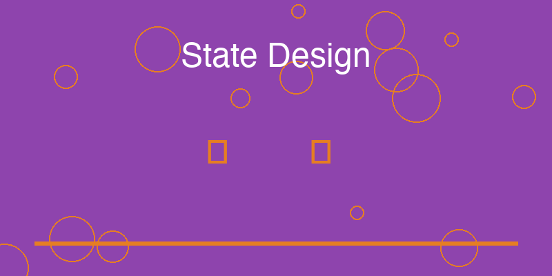

11 State Design: Empty, Loading, Error, and Success

One of the most revealing differences between practice projects and professional systems appears not in the main functionality, but in the edges of the experience.
When developers build small projects, most attention goes toward making the primary action work. A request succeeds. A record is created. A list of results appears on the screen.
As long as the ideal flow works, the system is considered complete.
However, real systems rarely operate exclusively within this ideal flow. Data may not exist yet. Network operations may take time. Requests may fail. Inputs may be invalid.
Professional software acknowledges these realities and designs explicit responses for them. Instead of assuming that the happy path always occurs, it treats different outcomes as states of the system.
These states—empty, loading, error, and success—form the foundation of reliable user experience.
11.0.1 The Empty State
The empty state appears when the system has no data to display.
This situation is extremely common. A new user may not yet have created any records. A search query may return no results. A newly installed system may begin with an empty database.
Practice projects often neglect this situation. When the system encounters empty data, it simply displays nothing or produces a confusing interface.
Professional systems handle this state deliberately. They acknowledge the absence of data and provide context for the user.
An empty state may explain why no information appears and suggest the next step—perhaps creating a new item or adjusting a search query.
Instead of presenting a blank interface, the system communicates clearly that the current state is expected and manageable.
11.0.2 The Loading State
Many operations in modern systems require time to complete.
A request may travel across a network, a database may perform a query, or a computation may process large amounts of information. During this time, the system is temporarily unable to present the final result.
Practice projects often leave this period unaddressed. The interface may appear frozen or unresponsive while the operation completes.
Professional systems make the loading state visible.
Indicators such as progress bars, spinners, or subtle animations communicate that the system is actively working. These signals reassure the user that the request has been received and that the system remains responsive.
The presence of a loading state transforms waiting from confusion into a predictable part of the experience.
11.0.3 The Error State
Errors occur whenever an operation fails to complete successfully.
In practice projects, errors frequently appear as raw exceptions, cryptic messages, or sudden interruptions. These responses may be understandable to the developer who wrote the code but confusing to anyone else.
Professional systems treat errors as structured states.
When a failure occurs, the system explains what happened in clear language. It may indicate whether the issue was caused by invalid input, missing resources, or temporary system conditions.
Just as important, the system often suggests possible next steps—retrying the operation, correcting the input, or contacting support.
By framing errors as understandable states rather than catastrophic failures, the system maintains user confidence even when things go wrong.
11.0.4 The Success State
The success state represents the completion of an operation.
While this state may seem obvious, its design still matters. Users benefit from clear confirmation that an action has been completed successfully.
Professional systems often provide subtle signals to acknowledge success. A message may confirm that a record has been saved. A visual update may show that new data has appeared in the interface. A command-line tool may display a clear confirmation message.
These signals prevent ambiguity. Users know that their actions produced the intended result.
Without such confirmation, users may wonder whether the system processed their request correctly.
11.0.5 Completing the State Space
当这四种状态——空状态、加载状态、错误状态和成功状态——被一起考虑时，它们定义了一个状态空间，涵盖了系统在交互中最常遇到的条件。
练习项目通常只实现成功状态。其他一切都留给隐式或未处理。
专业系统则刻意设计所有四种状态。
通过这样做，它们确保系统在任何情况下都表现出可预测的行为。每种可能的结果都有定义的响应。
与核心功能的开发相比，对系统边缘的这种关注可能显得微不足道。然而，它在塑造专业感知方面起着至关重要的作用。
当这些状态被正确实现时，用户几乎不会注意到。他们只是简单地体验系统为稳定、响应迅速且易于理解。
然而，当这些状态缺失时，这种缺失立即变得明显。
因此，设计完整的状态空间是将练习项目转变为成熟系统的安静但关键的步骤之一。
状态设计不仅影响用户体验，也反映了开发者的思维方式。一个只考虑成功状态的系统暗示开发者只关注理想情况。一个考虑所有状态的系统暗示开发者思考真实世界的复杂性。
这种思维模式的差异，是练习项目和专业系统之间最根本的区别之一。
11.1 实践指南：状态设计框架
设计完整的状态空间需要系统的方法。以下是一个实用的状态设计框架。
11.1.1 四状态设计SOP
第一步：识别状态
对于每个用户操作或系统功能，列出所有可能的状态： - 空状态：没有数据或内容时 - 加载状态：操作进行中时 - 错误状态：操作失败时 - 成功状态：操作成功时
第二步：设计每个状态的UI
为每个状态设计视觉呈现： - 空状态：说明性文字 + 行动号召 - 加载状态：加载指示器 + 可选的进度信息 - 错误状态：错误消息 + 重试/修复选项 - 成功状态：确认反馈 + 结果展示
第三步：定义状态转换
定义状态之间如何转换： - 空状态 → 加载状态：用户发起操作 - 加载状态 → 成功状态：操作成功完成 - 加载状态 → 错误状态：操作失败 - 错误状态 → 加载状态：用户重试 - 成功状态 → 空状态：清除数据
第四步：实现和测试
为每个状态编写代码，并测试所有可能的转换路径。
11.1.2 状态设计检查清单
空状态设计检查： - [ ] 是否解释了为什么没有内容？ - [ ] 是否提供了下一步操作的建议？ - [ ] 视觉上是否与成功状态有明显区别？ - [ ] 是否避免了令人困惑的空白页面？
加载状态设计检查： - [ ] 是否有可见的加载指示器？ - [ ] 用户是否知道系统正在工作？ - [ ] 是否有预计的等待时间信息？ - [ ] 是否可以取消操作？
错误状态设计检查： - [ ] 错误消息是否清晰易懂？ - [ ] 是否说明了错误的原因？ - [ ] 是否提供了解决问题的建议？ - [ ] 是否有重试或替代操作的选项？
成功状态设计检查： - [ ] 是否明确确认了操作成功？ - [ ] 是否展示了操作的结果？ - [ ] 是否引导用户进行下一步操作？ - [ ] 反馈是否及时且清晰？
11.1.3 快速诊断：你的状态设计是否完整？
对于你的项目中的每个主要功能，回答以下问题：
11.2 本章总结
状态设计是用户体验的关键组成部分。一个完整的状态空间确保系统在任何情况下都能提供清晰、有用的反馈。
空状态、加载状态、错误状态和成功状态构成了最常见的基础状态框架。虽然它们看起来简单，但它们的设计质量直接影响用户对系统的感知。
专业系统不会忽视这些”边缘”状态。相反，它们精心设计每个状态，确保用户在任何情况下都能获得良好的体验。
下一章，我们将探讨另一个常被忽视但至关重要的接口：文档。好的文档不仅仅是说明，它是系统的第一个界面，直接影响用户的第一印象。
实践建议：
- 状态优先设计：在设计功能时，先设计所有状态，再实现逻辑。
- 使用状态机图：为复杂功能绘制状态机图，帮助理解所有可能的状态和转换。
- 测试所有路径：确保所有状态转换都被测试，包括错误路径。
- 收集反馈：观察用户在不同状态下的反应，优化设计。
立即行动：
选择你的项目中的一个功能，识别它所有的状态。为每个状态设计UI，并实现状态转换逻辑。